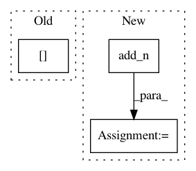

9f66664f055e7943d157ba94b7bd5b0bc5b3d54e,models/experimental/deeplab/model.py,,loss_fn,#Any#Any#Any#Any#,30
Before Change
params["image_pyramid"],
weight_decay=params["weight_decay"],
is_training=mode == tf.estimator.ModeKeys.TRAIN,
fine_tune_batch_norm=params["fine_tune_batch_norm"]
)
for output, num_classes in params["outputs_to_num_classes"].items():
add_softmax_cross_entropy_loss_for_each_scale(
After Change
upsample_logits=params["upsample_logits"],
scope=output)
losses = tf.add_n(tf.losses.get_losses())
l2_loss = []
for v in tf.trainable_variables():
if "BatchNorm" not in v.name and "weights" in v.name:
l2_loss.append(tf.nn.l2_loss(v))
loss = losses + params["weight_decay"] * tf.add_n(l2_loss)
return loss
def _create_eval_metric(features, labels, params):
In pattern: SUPERPATTERN
Frequency: 3
Non-data size: 3
Instances
Project Name: tensorflow/tpu
Commit Name: 9f66664f055e7943d157ba94b7bd5b0bc5b3d54e
Time: 2018-07-30
Author: brennan.saeta@gmail.com
File Name: models/experimental/deeplab/model.py
Class Name:
Method Name: loss_fn
Project Name: HyperGAN/HyperGAN
Commit Name: b7c79a68d95538174386b28743a9ba332dc487ad
Time: 2018-12-05
Author: mikkel@255bits.com
File Name: hypergan/train_hooks/gp_sn_memory_train_hook.py
Class Name: GpSnMemoryTrainHook
Method Name: __init__
Project Name: HyperGAN/HyperGAN
Commit Name: e601e7c528f8c7925eae86bcf10c50dd1b07cd80
Time: 2018-12-07
Author: martyn@255bits.com
File Name: hypergan/train_hooks/gradient_penalty_train_hook.py
Class Name: GradientPenaltyTrainHook
Method Name: __init__